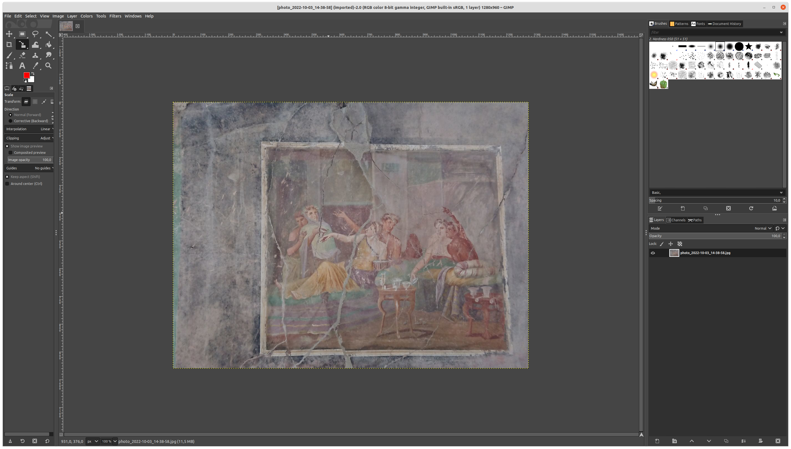
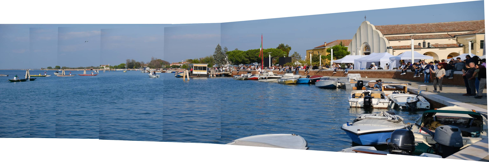
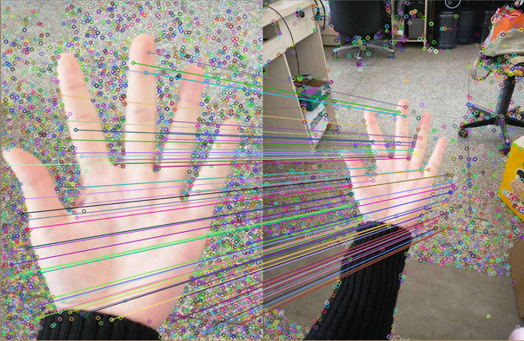
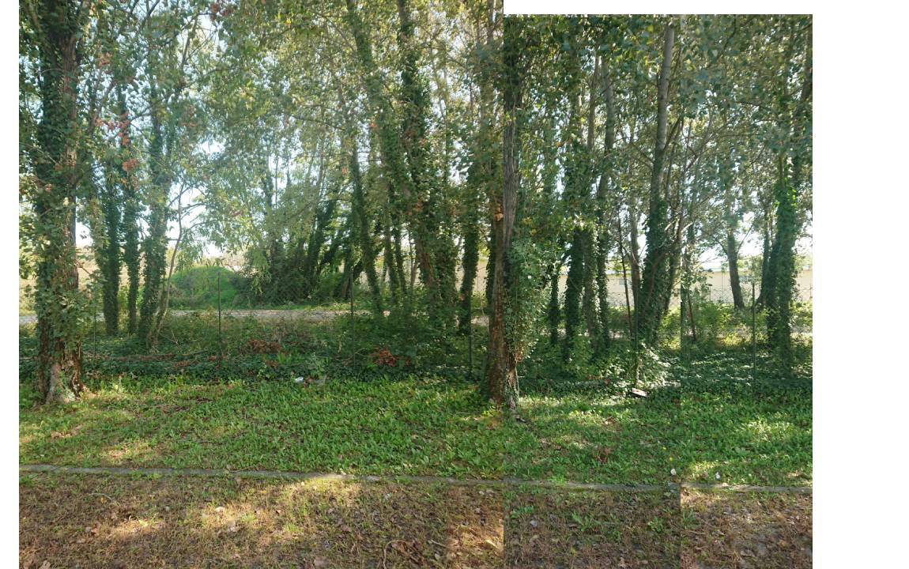
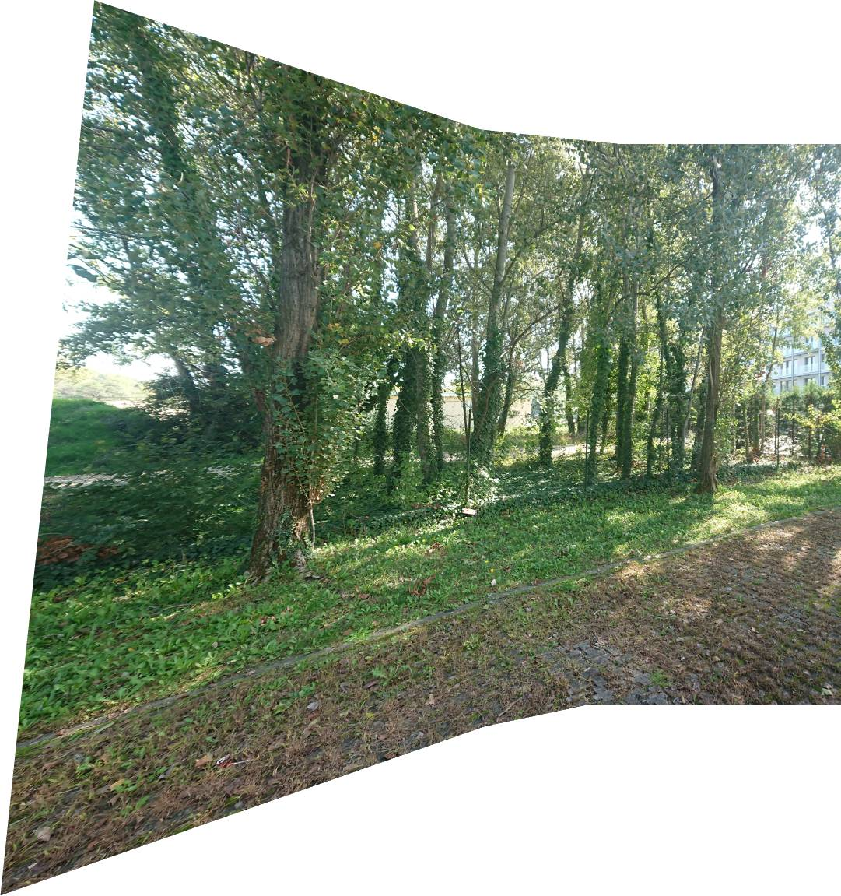
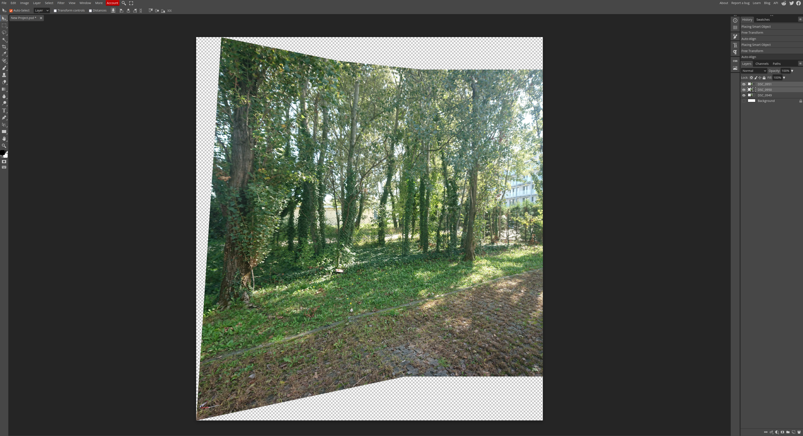
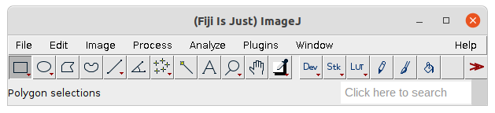
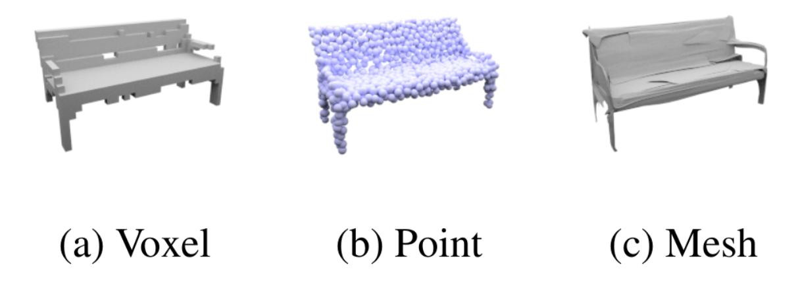

Advanced Computer VisionLaboratory
Ca' Foscari University
Lab Sessions
- Practical work (computer needed)
- Interaction (not only frontal lecture)
- Group work (changing groups)
About me
- Researcher at DAIS for Computer Vision and 3D Reconstruction
- Reach out via mail or come to the Zeta building
- Passionate about open source software
Open Source Software (OSS)
Using open source guarantee freedom of choice and possible customization and empowers community efforts.
Talk from R. StallmanTools for the course
| Software | Task | Link |
|---|---|---|
| GIMP | Generic Image Processing | install |
| Fiji | Scientific Image Processing | install |
| Photopea | Image Processing and Editing | web-based |
| Meshroom | 3D Reconstruction | install |
| Meshlab | 3D Processing | install |
| Blender | 3D Modelling and Rendering | install |
| Postgres | Advanced Database | install |
| QGIS | Geographic Information System | install |
| QField | Mobile tool for QGIS | install |
| Teachable Machine | AI-based framework for experiments | web-based |
Compression
what does it mean?
Quick check
- is compression lossless?
- what is the resolution of an image?
The practical side
- can you make an example when compression is useful? and useless?
- how can you compress an image?
An example
 |
|
| size: 17.0 MB |
size: 1.7 MB |
Another example
 |
|
| size: 1.0 MB |
size: 13.0 MB |
Compression with GIMP
Exercise
- We divide in 3/4 groups, download software (GIMP) and images
- Each group compress the images at their best
- Images are shown with the original one for a test
- The group whose images are smaller (in size) wins
Image Alignment
How does alignment work?

Do we have different types of alignment?
|  |  |
| collage |
spherical |
Alignment in practice
- Enough overlapping and features
- Same condition on capturing
Alignment with Photopea
Alignment with ImageJ (Fiji)
Exercise
- We divide in 3/4 groups, download the images
- Each group tries to align the images at their best
- Challenge 1: what is the minimum number of images to obtain full picture?
- Challenge 2: what is the best number of images?
3D Reconstruction
How can 3D data be stored?

Compression for 3D data?
For Friday
We will work on 3D Reconstruction
Please install Meshroom